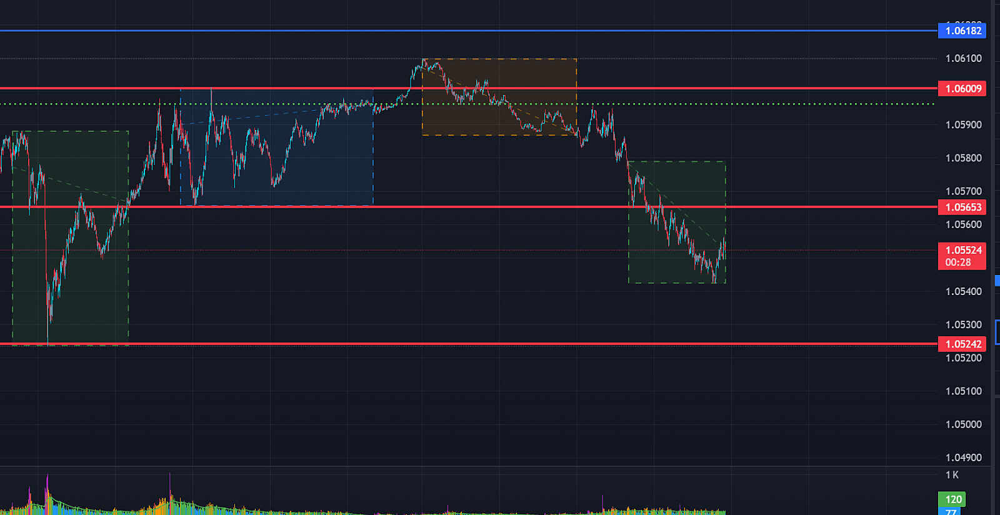
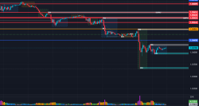

반복 시행이 가능한 유로/달러 최고의 자리 공유
피벗트레이더 정회원
2024.11.20. 22:08조회 165
저는 유로/달러만 거래를 합니다.
그리고 저는 보조지표보다는 아시아, 유롭, 미장의 가격 전달 방식에 대해 주로 관찰하고 공부를 합니다.
라이언님꼐서 항상 말씀해주시는 반복시행이 가능한 자리를 찾기 위해 항상 고민하는 사람입니다.
하지만 확실한 자리를 몇 곳을 알지만 매매중독인지... 잦은 매매로 인해 항상 제로섬 게임을 주로 했습니다.
그리고 플랍시장을 알았고. 잦은 매매 없이도 꾸준한 수익만 있다면 저 같은 매매가 잦은 사람에게는 너무나 매력적이라 생각되었습니다.
이번주에 가입하고 매매를 시작했습니다. 잦은 질문에도 도움을 주시는 분이 많아 이곳에 저만의 꿀팁을 공개합니다.
사용을 어떻게 하는냐는 여러분들의 몫이고 충분히 공부해보시고 적용해보세요.
유로/달러에서 자주 나오는 자리입니다.
키움 CME 계좌 기준 보통 50~100포인트 정도 나오니 전일 폭이 넓다면 당일 50% 이상의 수익을 주기도 합니다.
(오늘은 유럽장까지 약 30% 수익)
오늘도 자리를 주었고 하단에 트레이딩뷰 올립니다.
반드시 리플레이 많이 해보시고 대응해보세요.
(통화 시장 환경)
스마트머니(대형 거래원)가 내부에서 내부 혹은 내부에서 외부로 가격을 전달할 때는 방향성을 가져야하고
유럽과 미국장에서 각각의 컨펌 과정을 거쳐야합니다.
하지만 개매들은 사후에야 그 방향성을 분석할 수 있지만 장중에는 그 변동의 폭과 방향성을 따라가는 것은 불가능합니다.
특히 통화선물의 경우 뇌동 매매를 하면 하루에도 전액 청산을 당기에 딱 좋은 시장입니다.
(작동 원리)
미국장 마감을 보면 당일 고가 혹은 저가를 찍고 하락 혹은 상승 마감하는 것이 대부분 입니다.
즉 고가와 저가를 찍은 후 외부가 아닌 내부 가격대(장중 유럽장 혹은 아시아장 근처) 에서 마감을 하는 것입니다.
그리고 이렇게 마감을 하면 다음날 방향성 예측은 거의 불가능합니다.
그런데 5일 중 최소 하루 이상은 저가 혹은 고가 근처에서 마감하는 날이 있습니다.
즉 다음날 외부로갈지 가격대 내부로 가져갈지를 다음날 아시아장에서 확인이 가능합니다.
그리고 어런 자리에서 아래의 스텝을 따라 거래를 한다면 높은 승률로 거래하실 수 있습니다.
다양한 상황이 있지만 오늘 나온 대표적인 상황의 예시입니다.
(적용 가능 시장 상황)
상승/하락장과 상관 없이 적용 가능하지만 특히 하락장에서 일시 상승시 가장 좋음
(진입 조건)
1. 전일 미국장 종가가 유럽장 보다 고점 근처에서 마감(전일 아시아장 고점 근처면 확률이 더 올라감)
2. 아시아장 시작 전후 전일 미국 최고가 돌파 후 하락 관찰
3. 아시아장 시작 후 전일 미국 고가 아래로 진입 시 진입(스탑로스는 당일 아시아장 고가)
*상승장에서는 전일 고가 터치 혹은 터치 없이 위로 올라가면 반대로 그날은 원웨이 상승임(큰 폭 상승)
(수익 실현)-
1. 1차는 전일 미국장 저가
2. 2차는 전일 유럽장 저가
3. 3차는 전일 최저가
*한국 시간 저녁 8시기준 트레이딩뷰입니다.
(주황 박스는 아시아장, 녹색은 유럽장, 파랑 박스는 미국장입니다.)
*지표 발표가 있으면 지표 발표직후는 보통 전일 미국장 저가 근처에 있음.
(통상적으로 지표 발표 없이도 전일 미국장 근처에서 장시작)
*오늘 같은 경우 고가가 유럽장을 뚫지 못한다면 전일 저가 밑으로 큰폭의 하락이 있을 겁니다.

피봇트레이더
위에 박스를 보면 박스 사이에 공간이 보일겁니다. 오늘 같은 경우는 아시아장과 유럽장에 갭이 발생하고 유럽장에서는 하락으로 컨펌을 한 생태입니다. 만약 미국장에서 유럽장 저가 컴펌하고 하락으로 가면 지금 유로 하락은 지속될 겁니다.
2024.11.20. 23:18
우달이
좋은정보 감사합니다.
공부해보겠습니다.
2024.11.21. 09:41
우달이
트레이딩뷰 티커는 뭘로보시나요?
2024.11.21. 11:04
피봇트레이더
CME와 FXCM 두 개 같이 봅니다.
2024.11.21. 19:28
우달이
피봇트레이더 감사합니다.
편안한저녁 보내셔요^^
2024.11.21. 19:36
cloud
오 새로운 접근이네요 가격전달방식
그러면 진입은 아시아장이 끝나고 하시는건가요
2024.11.22. 05:33
피봇트레이더
아시아장 진입 전략입니다.
보통 10시 이전에 자리가 나옵니다.
이 매매 장점은 숏 표지션을 당일 고가에서 잡는 것이기에 스탑로스 구간이 짧고 리스크가 적기에 당일 유럽장까지 부담 없이 가져살 수 있다는 것입니다.
이 글을 올리고 어제 장마감까지 106130 104330까지 떨어졌으니 원금대비 두 배 수익 이었네요.

2024.11.23. 20:19
피봇트레이더
참고로 유로달러는 금요일에 주봉과 월봉을 하단으로 다 뚤었기 때문에 주초에는 금요일 유럽장이 만들어 놓은 고가와 저가 사이를 오가는 횡보장을 만들고 이후 방향성을 잡을 것으로 보입니다. 물로 월봉과 주봉 리테스트 후 내려오면 계속 하락할 겁니다.
2024.11.23. 20:29
우달이
안녕하세요, 혹시 닌자로 거래시 티커명 알수있을까요?
2024.11.25. 19:57
피봇트레이더
우달이 6E 12-24입니다. CME차트니 트레이딩뷰에서 CME차트로 보셔야 가격이 맞을 겁니다.
2024.11.26. 02:29
원본 : 반복 시행이 가능한 유로/달러 최고의 자리 공유